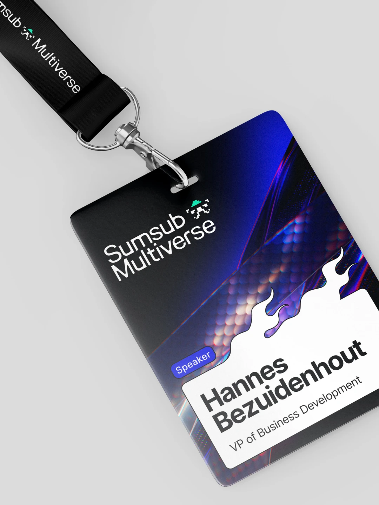
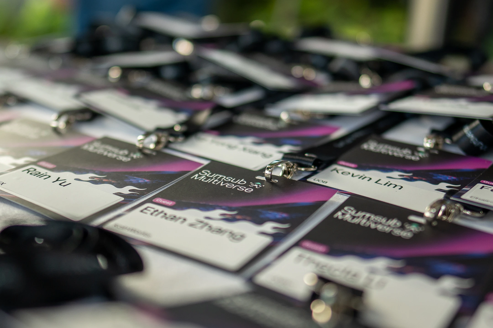
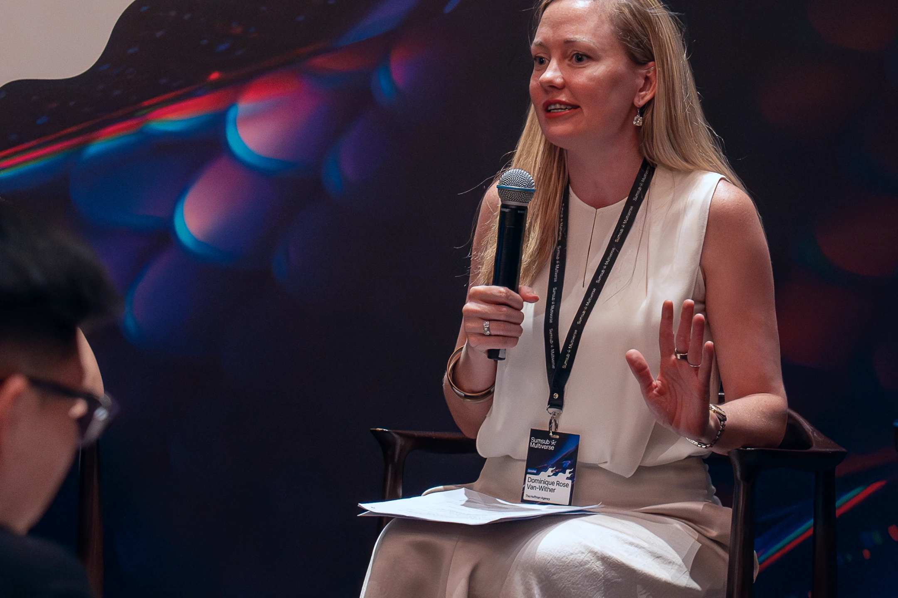
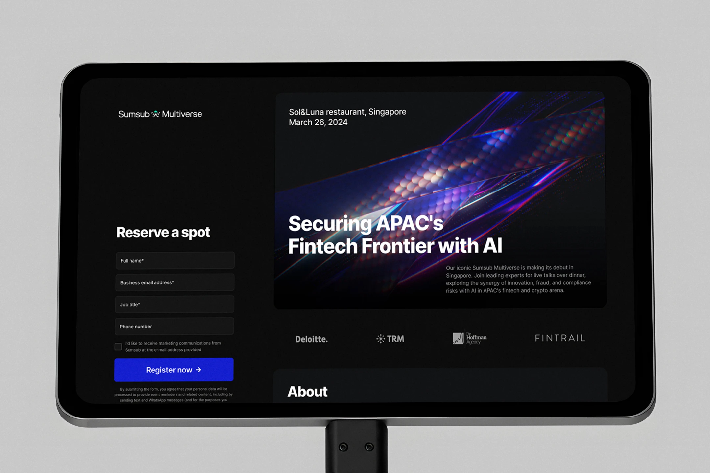
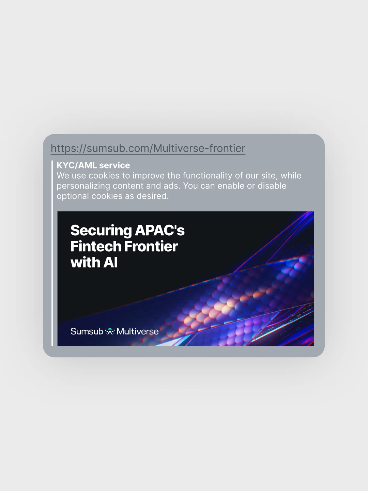
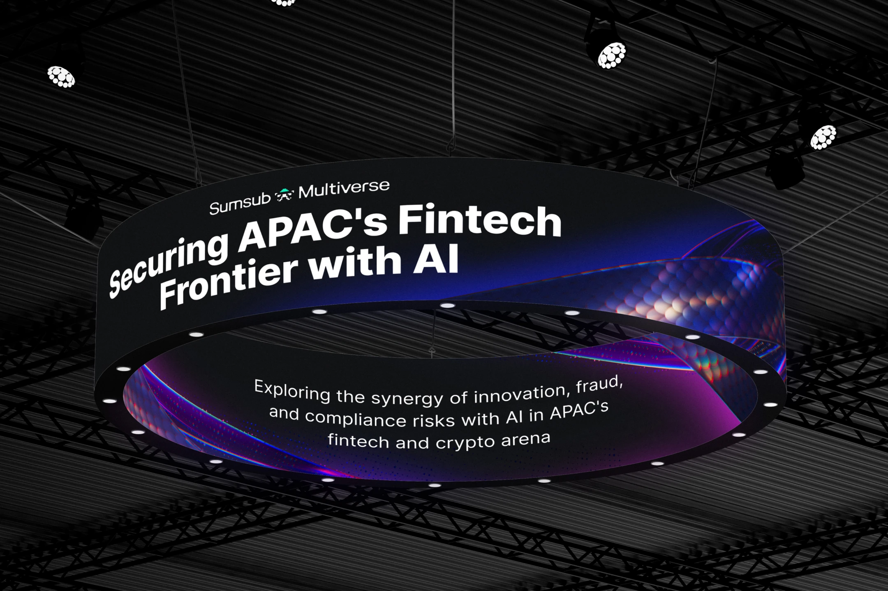
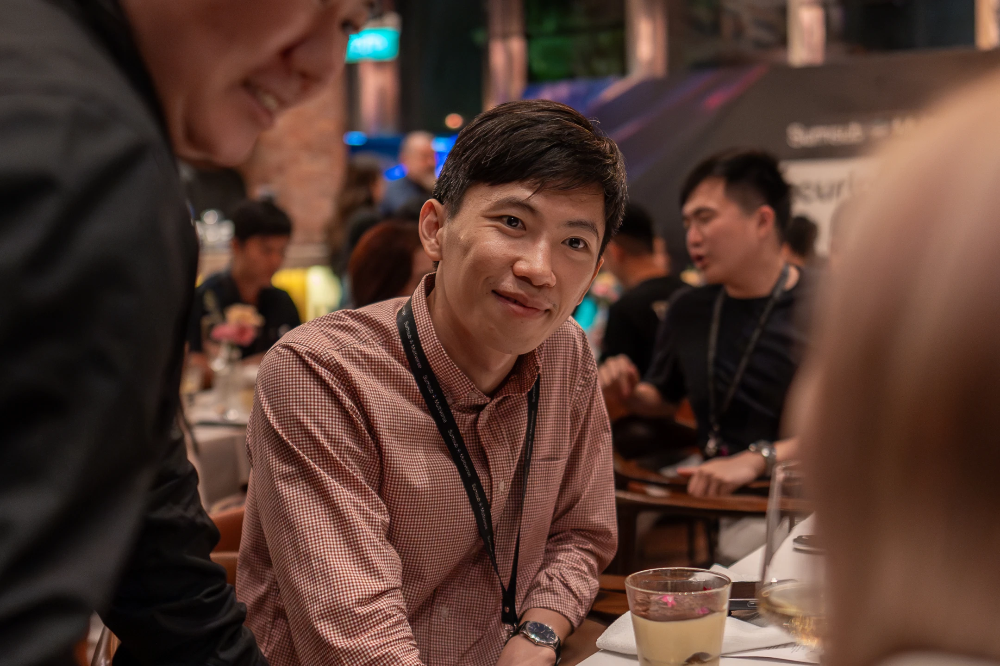
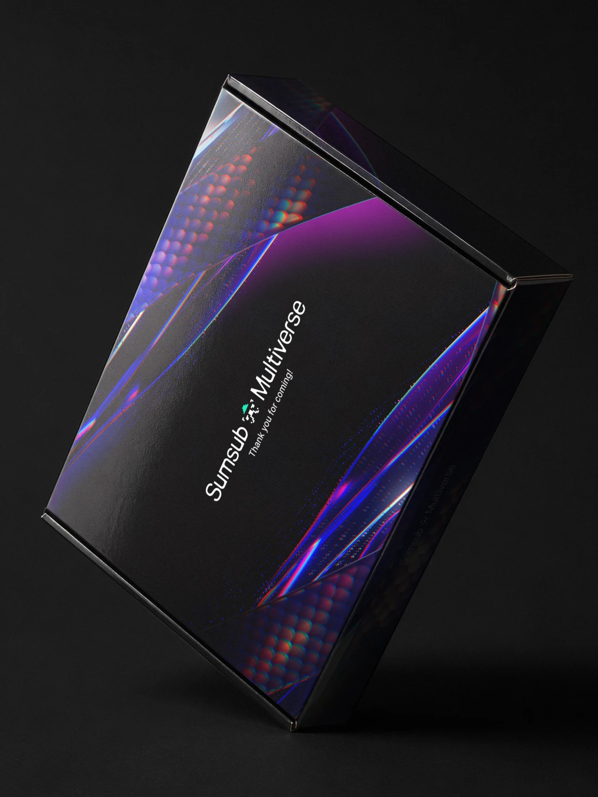
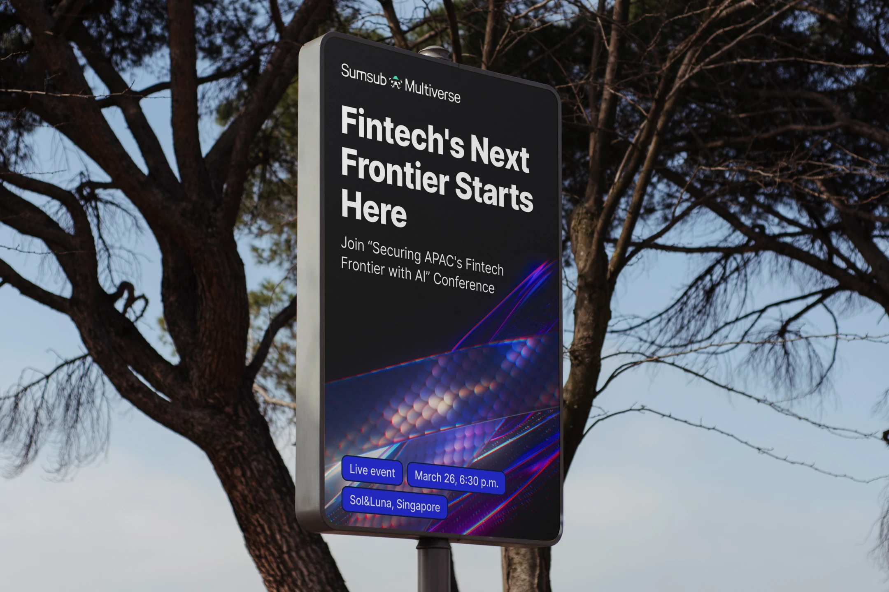
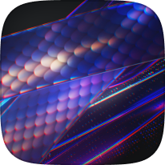

By 2030, APAC is set to overtake the US as the world's leading fintech market, growing at a 27% CAGR. That growth pulls AI into the center of both innovation and fraud. For Sumsub Multiverse in Singapore, we built an identity around the region's most recognizable symbol: the dragon, reimagined as a digital guardian against fraud—tradition merging with AI-driven transformation.









Sumsub Multiverse already had its own layered visual language, built to represent the hidden depths of fraud prevention. The dragon was the stakeholder's idea from the start, but the dilemma was making it feel earned, not a tacky cliché. In 2024, AI tools couldn't yet generate complex 3D easily, so it had to be built by hand, from flat sketches through to full 3D. The challenge was reconciling a literal symbol with real specificity, without shortcuts.
We took the dragon as the central figure, rebuilding its scales as a tangle of wires forming the tail, with AI data reading as glowing pulses running through them. Surfaces shift between solid and semi-transparent, giving the dragon a half-materialized, digital quality. White fire-like panels break through as accents, sharpening the regional read. The result: a digital dragon standing guard, tradition and AI security fused into one figure.
